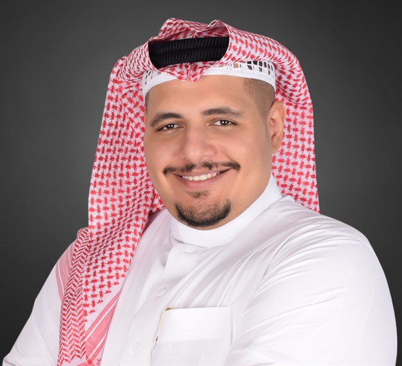

Planning & Quality Engineer · PMP® · Facility Management مهندس تخطيط وجودة · PMP® · إدارة المرافق
Abdullah Alsharif عبدالله الشريف
Industrial engineer turning a decade of field operations, quality, and project-controls experience into measurable results for contractors and government clients across Saudi Arabia. مهندس صناعي حوّل أكثر من عقد من الخبرة الميدانية في العمليات والجودة وضبط المشاريع إلى نتائج قابلة للقياس، لصالح المقاولين والجهات الحكومية في المملكة العربية السعودية.
Al Madinah, Saudi Arabia المدينة المنورة، المملكة العربية السعودية

About نبذة
I'm an industrial engineer (King Abdulaziz University) with over a decade managing operations, quality, and project controls for contractors serving government and municipal clients across Saudi Arabia. I currently work as Planning & Quality Engineer at SHALFA International Company, serving the National Water Company's facility department in Al Madinah, where I build quality plans, run facility inspections and ISO compliance, and track the KPIs and SLAs that keep operations accountable. I hold a PMP® certification and a professional engineering license from the Saudi Council of Engineers. مهندس صناعي (بكالوريوس من جامعة الملك عبدالعزيز) بخبرة تتجاوز عشر سنوات في إدارة العمليات والجودة وضبط المشاريع لصالح مقاولين يخدمون جهات حكومية وبلدية في المملكة العربية السعودية. أعمل حاليًا مهندس تخطيط وجودة في شركة شالفة الدولية، في خدمة إدارة المرافق التابعة لشركة المياه الوطنية بالمدينة المنورة، حيث أُعِدّ خطط الجودة وأنفّذ عمليات التفتيش على المرافق ومطابقة الأيزو، وأتابع مؤشرات الأداء واتفاقيات مستوى الخدمة التي تضمن انضباط التشغيل. حاصل على شهادة PMP® ورخصة مهندس مهني من الهيئة السعودية للمهندسين.
Experience الخبرة العملية
Quality plans for maintenance, cleaning, and hospitality services; facility inspections and ISO compliance; QA/QC KPIs and SLAs; electricity consumption monitoring. إعداد خطط الجودة لخدمات الصيانة والنظافة والضيافة؛ عمليات التفتيش على المرافق ومطابقة الأيزو؛ مؤشرات الأداء واتفاقيات مستوى الخدمة لضبط الجودة؛ متابعة استهلاك الكهرباء.
Schedules, milestones, and engineering team assignments; remote cost, budget, and progress monitoring; client and consultant progress meetings. الجداول الزمنية والمعالم الرئيسية وتوزيع فرق العمل الهندسية؛ متابعة التكلفة والميزانية والتقدم عن بُعد؛ اجتماعات متابعة مع العملاء والاستشاريين.
Operational planning across field teams, equipment, and resources; KPI, quality, safety, and municipal compliance monitoring (Balady 940); performance dashboards. التخطيط التشغيلي لفرق العمل الميدانية والمعدات والموارد؛ متابعة مؤشرات الأداء والجودة والسلامة والمطابقة البلدية (بلدي 940)؛ لوحات أداء تشغيلية.
Led 800 employees and 150 vehicles across multiple districts — cleaning, waste collection, pest control, and illegal-dumping removal; Balady 940 compliance. قيادة 800 موظف و150 مركبة عبر عدة أحياء — النظافة وجمع النفايات ومكافحة الآفات وإزالة التجمعات العشوائية؛ الالتزام بمعيار بلدي 940.
Credentials المؤهلات
- PMP® — Project Management Professional, PMI— محترف إدارة المشاريع، معهد PMI Certified May 2026 حاصل عليها مايو 2026
- Professional Engineering License رخصة مهندس مهني Saudi Council of Engineers الهيئة السعودية للمهندسين
- BSc Industrial Engineering بكالوريوس هندسة صناعية King Abdulaziz University, Jeddah — 2015 جامعة الملك عبدالعزيز، جدة — 2015
Skills المهارات
Domain المجال
Facility management · O&M · Planning & project controls · QA/QC · ISO 9001 · CAPA/NCR management · Auditing · HSE · Contract & procurement management إدارة المرافق · التشغيل والصيانة · التخطيط وضبط المشاريع · ضبط الجودة · الأيزو 9001 · إدارة CAPA/NCR · التدقيق · الصحة والسلامة المهنية · إدارة العقود والمشتريات
Method المنهجية
PMP methodology · Agile · Lean / Six Sigma / 5S · KPI & SLA design · Operational planning · Workforce & fleet management منهجية PMP · أجايل · لين / سيجما الستة / 5S · تصميم مؤشرات الأداء واتفاقيات مستوى الخدمة · التخطيط التشغيلي · إدارة القوى العاملة والأسطول
Tools الأدوات
Advanced Excel & Power BI · Oracle ERP · AutoCAD · Trello · Jira · Notion · Microsoft & Google Workspace إكسل المتقدم وPower BI · أوراكل ERP · أوتوكاد · تريلو · جيرا · Notion · مايكروسوفت وجوجل وركسبيس
AI الذكاء الاصطناعي
Claude · ChatGPT · Prompt engineering · Building AI-assisted workflows Claude · ChatGPT · هندسة الأوامر · بناء تدفقات عمل مدعومة بالذكاء الاصطناعي
Get in Touch للتواصل
Email:البريد الإلكتروني: abdullah.f.a.alsharif@gmail.com
Languages: Arabic (native) · English (professional) اللغات: العربية (اللغة الأم) · الإنجليزية (احترافية)